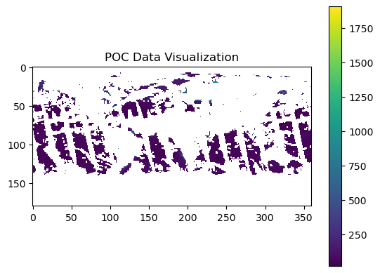
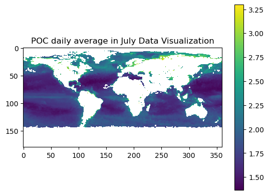

PACE data simple manipulation#
Author: Rui Jin (University of Washington (CICOES))
(University of Washington (CICOES))
This tutorial will show you how to do basic data manipulations on Level-3 (gridded) PACE data that you have accessed with earthaccess.
First load the libraries.
import earthaccess
import xarray as xr
from xarray.backends.api import open_datatree
import matplotlib.pyplot as plt
import cartopy.crs as ccrs
import numpy as np
Find PACE data#
Authenticate to NASA Earth Data using earthaccess and then load a month of data on particulate organic carbon (POC).
auth = earthaccess.login(persist=True)
tspan = ("2024-07-01", "2024-07-31")
results = earthaccess.search_data(
short_name="PACE_OCI_L3M_POC_NRT",
temporal=tspan,
granule_name="*.DAY.*.0p1deg.*",
)
paths = earthaccess.open(results)
Load data#
We can load the data using xarray and then select a single array.
dataset = xr.open_dataset(paths[0])
dataset
<xarray.Dataset> Size: 26MB
Dimensions: (lat: 1800, lon: 3600, rgb: 3, eightbitcolor: 256)
Coordinates:
* lat (lat) float32 7kB 89.95 89.85 89.75 89.65 ... -89.75 -89.85 -89.95
* lon (lon) float32 14kB -179.9 -179.9 -179.8 ... 179.8 179.9 180.0
Dimensions without coordinates: rgb, eightbitcolor
Data variables:
poc (lat, lon) float32 26MB ...
palette (rgb, eightbitcolor) uint8 768B ...
Attributes: (12/64)
product_name: PACE_OCI.20240701.L3m.DAY.POC.V2_0.poc...
instrument: OCI
title: OCI Level-3 Standard Mapped Image
project: Ocean Biology Processing Group (NASA/G...
platform: PACE
source: satellite observations from OCI-PACE
... ...
identifier_product_doi: 10.5067/PACE/OCI/L3M/POC/2.0
keywords: Earth Science > Oceans > Ocean Chemist...
keywords_vocabulary: NASA Global Change Master Directory (G...
data_bins: 745741
data_minimum: 18.199707
data_maximum: 1989.1997poc = np.array(dataset["poc"])
print(poc.shape)
(1800, 3600)
1. Statistical Operations#
# Mean
mean_value = np.nanmean(poc)
print("Mean value:", mean_value)
Mean value: 79.23537
# Median
median_value = np.nanmedian(poc)
print("Median value:", median_value)
Median value: 49.600098
# Standard deviation
std_value = np.nanstd(poc)
print("Standard deviation:", std_value)
Standard deviation: 105.90423
2. Boolean Indexing and Masking#
# Create a boolean mask
mask = poc > 100
filtered_poc = poc[mask]
print("Filtered poc (concentration > 100):", filtered_poc)
Filtered poc (concentration > 100): [184.7998 184.7998 184.7998 ... 325.6001 289.1997 262.1997]
3. Regriding#
poc_10lat = np.reshape(poc, (180, 10, 3600))
poc_latregrid = np.nanmean(poc_10lat, axis=1)
/tmp/ipykernel_147/4091360230.py:1: RuntimeWarning: Mean of empty slice
poc_latregrid = np.nanmean(poc_10lat, axis=1)
poc_latregrid_10lon = np.reshape(poc_latregrid, (180, 360, 10))
poc_latregrid_lonregrid = np.nanmean(poc_latregrid_10lon, axis=2)
/tmp/ipykernel_147/1374962890.py:1: RuntimeWarning: Mean of empty slice
poc_latregrid_lonregrid = np.nanmean(poc_latregrid_10lon, axis=2)
print(poc_latregrid_lonregrid.shape)
(180, 360)
4. Plotting Array Data#
plt.imshow(poc_latregrid_lonregrid, cmap='viridis')
plt.colorbar()
plt.title("POC Data Visualization")
plt.show()

dataset = xr.open_dataset(paths[1])
dataset
<xarray.Dataset> Size: 26MB
Dimensions: (lat: 1800, lon: 3600, rgb: 3, eightbitcolor: 256)
Coordinates:
* lat (lat) float32 7kB 89.95 89.85 89.75 89.65 ... -89.75 -89.85 -89.95
* lon (lon) float32 14kB -179.9 -179.9 -179.8 ... 179.8 179.9 180.0
Dimensions without coordinates: rgb, eightbitcolor
Data variables:
poc (lat, lon) float32 26MB ...
palette (rgb, eightbitcolor) uint8 768B ...
Attributes: (12/64)
product_name: PACE_OCI.20240702.L3m.DAY.POC.V2_0.poc...
instrument: OCI
title: OCI Level-3 Standard Mapped Image
project: Ocean Biology Processing Group (NASA/G...
platform: PACE
source: satellite observations from OCI-PACE
... ...
identifier_product_doi: 10.5067/PACE/OCI/L3M/POC/2.0
keywords: Earth Science > Oceans > Ocean Chemist...
keywords_vocabulary: NASA Global Change Master Directory (G...
data_bins: 684721
data_minimum: 17.799805
data_maximum: 1961.0pocs=[]
for i in range(31):
dataset = xr.open_dataset(paths[i])
poc_reshaped = np.array(dataset["poc"]).reshape((180,10,360,10))
poc_10lat = np.nanmean(poc_reshaped, axis=1)
poc_10lat_10lon = np.nanmean(poc_10lat, axis=-1)
pocs.append(poc_10lat_10lon)
poc_7_daily = np.stack(pocs)
print(poc_7_daily.shape)
(31, 180, 360)
/tmp/ipykernel_147/2594940156.py:6: RuntimeWarning: Mean of empty slice
poc_10lat = np.nanmean(poc_reshaped, axis=1)
/tmp/ipykernel_147/2594940156.py:7: RuntimeWarning: Mean of empty slice
poc_10lat_10lon = np.nanmean(poc_10lat, axis=-1)
poc_7 = np.nanmean(poc_7_daily, axis=0)
/tmp/ipykernel_147/3791947967.py:1: RuntimeWarning: Mean of empty slice
poc_7 = np.nanmean(poc_7_daily, axis=0)
poc_7_log10 = np.log10(poc_7)
plt.imshow(poc_7_log10, cmap='viridis')
plt.colorbar()
plt.title("POC daily average in July Data Visualization")
plt.show()
